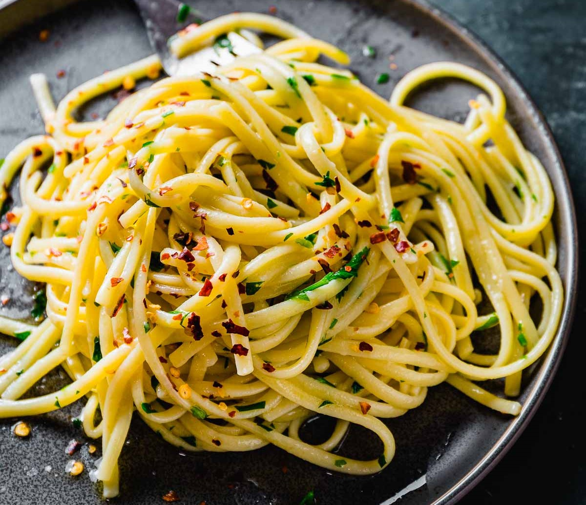

Чесночная паста Aglio Olio

- оливковое масло
- чеснок (2 зубчика)
- перец чили (половинка, сухой или свежий)
- спагетти
- петрушка
Поставить сковороду на водяную баню, налить много оливкового масла, чтобы покрыло дно. Порезать и кинуть обжариваться 2 зубчика чеснока и перец чили по вкусу (примерно половинку, сухой или свежий).
Поставить вариться спагетти, варить их 2/3 от необходимого времени. Сковороду со специями поставить на плиту, пасту слить и переложить в сковороду, добавить немного воды (примерно 50–100 мл). По желанию мелко нарезать петрушку и добавить на этом этапе. Помешивая, доготовить пасту оставшееся время, попробовать и при необходимости досолить.
 Назад к списку рецептов
Назад к списку рецептов